スタジオ
背景・照明・小道具を配置し、撮影するカメラとシーンを保存します。画面の色合いやレンズ効果については、カメラ効果で別途説明します。
シーンを保存
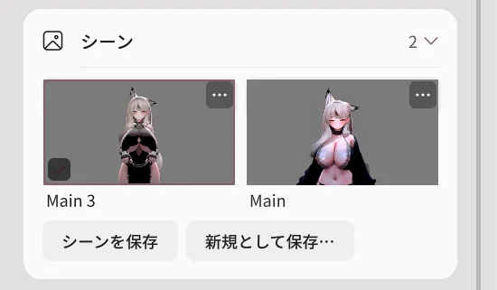
- 背景・照明・アバター・カメラを希望する状態に合わせます。
- シーンカードに保存します。
- 次にサムネイルを選択すると、そのシーンの構成が呼び出されます。
シーンはアバターの位置とポーズも記憶しており、開くとそのまま戻ります。シーン内でアバターを切り替えると、切り替えたアバターがそのシーンのアバターになります。保存していない変更があるままアバター一覧に戻ると、保存するか確認します。
| 項目 | すること |
|---|---|
| 新しいシーン | 新しい場面の構成を作ります。 |
| 保存 | 現在の配置と設定を記録します。 |
| サムネイル | 保存したシーンを呼び出します。 |
| 検索 | 名前でシーンを探します。 |
| ⋯ メニュー | 名前の変更・複製など、該当シーンのコマンドを開きます。 |
アバター配置
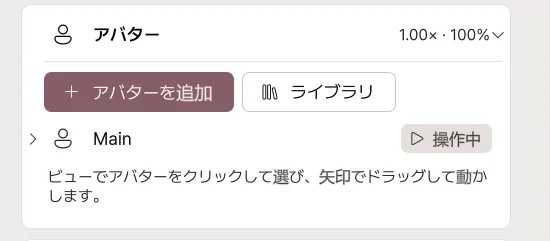
| 調整 | 変わるもの |
|---|---|
| 位置 X | 左右に移動します。 |
| 位置Y | 上下に移動します。 |
| 位置 Z | 前後に移動します。 |
| 回転 | アバターが向いている方向を変えます。 |
| サイズ | シーン内のアバターを大きくしたり小さくしたりします。 |
| 明るさ | アバターに適用される明るさを調整します。 |
| 中央に | アバターを基準位置に戻します。 |
複数アバター (Pro)
アバターを追加して、同じシーンにキャラクターをさらに置きます。アバターを選択した後、操作対象を変更すると、私のトラッキング入力を受けるキャラクターが変わります。
- 同じ動作: 複数のアバターが同じトラッキング入力で一緒に動きます。
- リップシンク全員: 複数のアバターの口を一緒に動かします。
- リップシンクメイン: メイン操作アバターのみ口を動かします。
- リップシンクオフ: 共有リップシンクを使用しません。
カメラ (Pro)
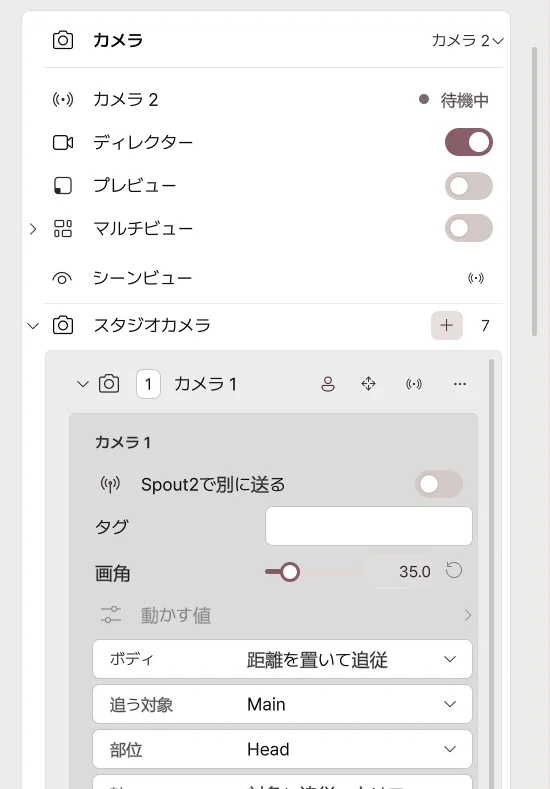
- カメラ → スタジオカメラの+を押してカメラを作成します。
- カメラ名を押して詳細設定を開きます。
- 対象・位置・視線・レンズを調整します。
- そのカメラを配信対象として選択します。
直接つかむをオンにすると、シーン画面にカメラが表示され、小物のように動かしたり回したりできます。直接つかむと現在の画面にするは、カメラ設定の1行目とカメラの⋯メニューにあります。現在の作業構図をそのまま使いたい場合は、現在の画面にするを使用します。
位置方式
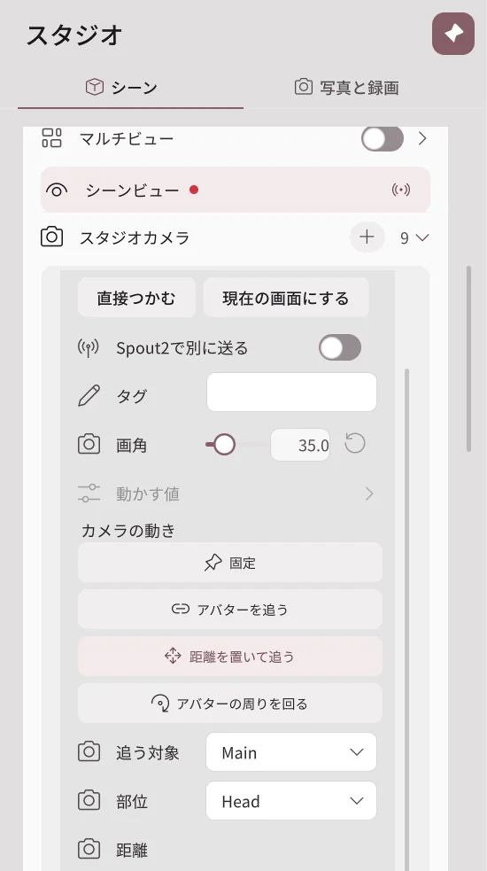
| 選択 | カメラの動き方 |
|---|---|
| 定位置 | 決めた位置に留まります。アバターが移動しても追従しません。 |
| 対象固定 | 選択した骨やポイントに付着します。頭を選ぶと頭の内部に入ることがあります。 |
| 距離を置いて追従 | 対象からX・Y・Zだけ離れた位置を維持しながら追従します。 |
| 対象を回る | 決めた距離で対象の周りを回ります。リング角度で前・横の構図を変えます。 |
- 対象: 追従するアバターの頭や体などの基準点を選びます。
- 距離 X・Y・Z: 対象からカメラを左右・高さ・前後にどのくらい離すかを決めます。
- 滑らかさ: 高くするとゆっくり追従して揺れが減り、低くするとすぐに反応します。
回転基準
| 選択 | アバターが回ったとき |
|---|---|
| 世界座標 | カメラの相対方向はシーン基準で維持されます。 |
| 単純追従 | 対象の後ろを追って移動します。 |
| 対象に合わせて回転、上は世界 | 左右の回転に合わせますが、画面上は立てたままにします。 |
| 回転、ロールなし | 左右・上下の回転に合わせますが、頭の傾きは追従しません。 |
| 対象に固定 | 頭の傾きを含む全回転に合わせてカメラの位置も回転します。 |
この設定はカメラが置かれる基準です。顔を常に画面に収めたい場合は、下の視線方式も選んでください。
視線方式
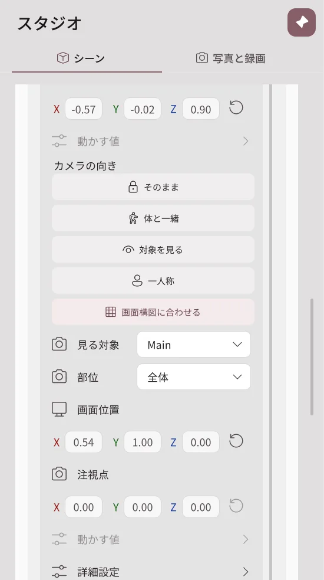
| 選択 | レンズが見る場所 |
|---|---|
| 定位置 | 指定した方向をずっと見続けます。 |
| 対象と一緒に | 対象が振り向く方向に一緒に回ります。 |
| 対象凝視 | 選んだ顔やポイントをずっと見続けます。 |
| 一人称 | 開始角度を基準に人物視点のように見ます。 |
| 画面構図 | 対象を画面上の決めた位置に収めるように方向を合わせます。 |
- 目標地点: 対象で焦点を置く位置をX・Y・Zに移します。
- 画面位置: 横・縦0.5は中央です。値を変えるとアバターを画面の別の位置に収めます。
- 視線の滑らかさ: 高くするとレンズ方向がゆっくり変わり、低くするとすぐに追従します。
レンズと切り替え
| 項目 | 値を変えると |
|---|---|
| 画角 | 下げると望遠のように大きく、上げると広角のように広く収めます。 |
| 直交サイズ | 高くすると広く収めてアバターが小さくなります。 |
| 前クリッピング距離 | この距離より近い物体は描画しません。高くすると顔や小道具が切れることがあります。 |
| 後クリッピング距離 | この距離より遠い物体は描画しません。 |
| 画面比率 | 横放送・縦映像など画面の形を変えます。 |
| 揺れ強度 | 高くすると手持ち撮影のような揺れが強くなります。0は揺れません。 |
| 揺れ速度 | 高くするとより速く揺れます。 |
| カット | 他のカメラに即座に切り替わります。 |
| クロスフェード | 2台のカメラの画面が切り替わる間に重なって変わります。 |
監督とマルチビュー
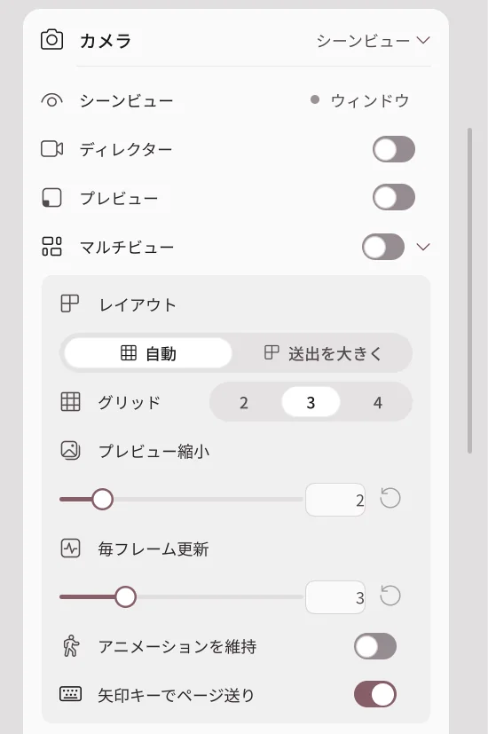
- 監督モード: カメラを切り替えて放送画面を構成します。
- マルチビュー: 複数のカメラのプレビューを一か所で見ます。別のスイッチでオンにします。
- グリッド: 増やすと一度に見るカメラの数が増え、各マスは小さくなります。
- ダウンサンプリング: 上げるとプレビュー画質とPCの負担が一緒に減ります。
- リフレッシュ率：下げるとプレビューが滑らかでなくなり、PCの負担が減ります。
- 自動切り替え: タグと重みで次のカメラを選びます。重みが0のカメラは自動選択されません。
- カメラ別 Spout2: 選択したカメラ映像を別の名前でOBSに送ります。最大3つまで追加出力できます。
背景
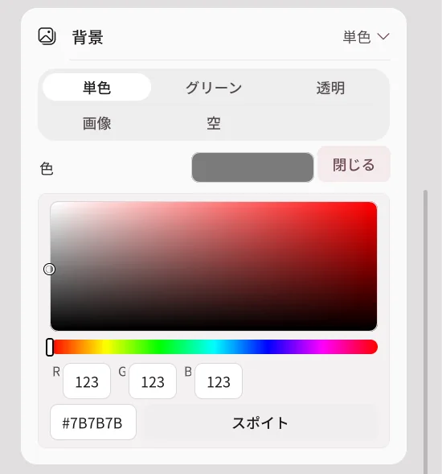
| 選択 | 表示される結果 |
|---|---|
| 単色 | 均一な色で背景を塗りつぶします。 |
| グリーン | OBSでクロマキーで消せる背景です。衣装とは異なる色を選んでください。 |
| 透明 | Spout2·NDIで背景なしで合成します。受け取る側もアルファ合成に対応している必要があります。 |
| 画像 | PNG・JPGの画像を背景として使用します。 |
| 空 | 空の風景を背景として使用します。 |
画像の拡大・縮小は絵のサイズを、左右・上下の位置は絵が置かれる場所を変えます。塗りつぶしをオンにすると比率を維持しながら端を切り取って塗りつぶします。
携帯電話やビデオカメラのように見える撮影画面の装飾は、スタジオ → 写真と録画タブに移りました。写真と録画を確認してください。
照明
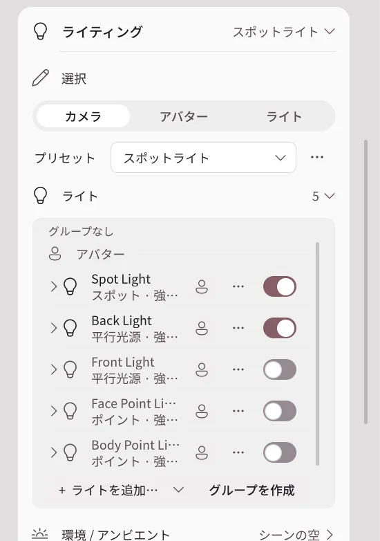
プリセットで全体の雰囲気を選び、個別ライトを押して詳細を調整します。プリセット一覧は種類ごとに折りたたまれ、自分で保存したプリセットが一番上に置かれます。
| 項目 | 変えると |
|---|---|
| 強さ | 高くすると明るくなります。あまり高くすると肌や髪が白飛びします。 |
| 色 | アバターを照らす光の色を変えます。 |
| 色温度 | 低いとオレンジ色、 高いと青に近くなります。 |
| 範囲 | 点光・スポットの光がより遠くまで届きます。 |
| スポット角度 | 狭めると一部分を、広げると周囲まで照らします。 |
| 影の強さ | 高くすると影が濃くなります。 |
| 影のぼかし | 高くすると影の境界がぼやけます。 |
| 環境光 | ライトが直接届かない部分を明るくします。 |
位置と対象
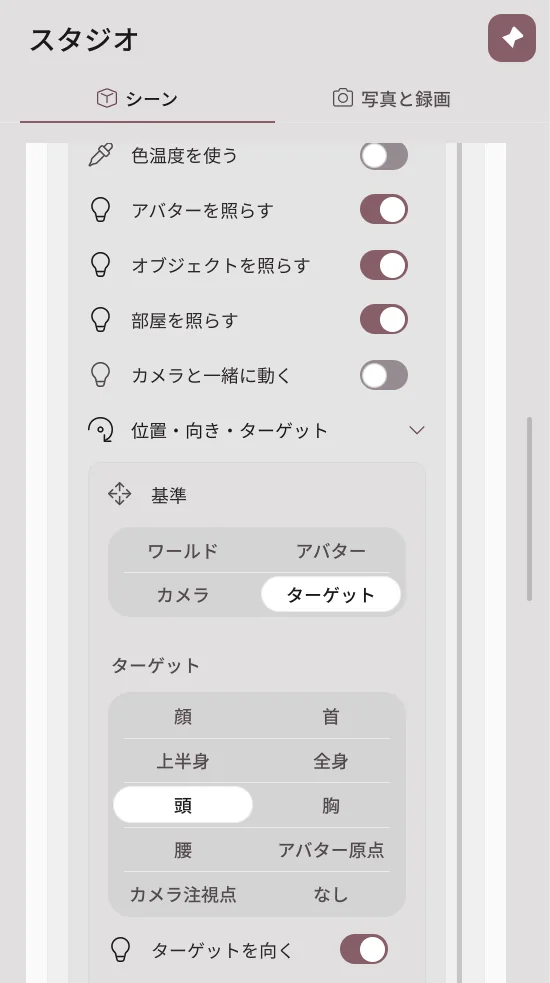
- 位置追従: アバターや骨が移動するとライトも追従します。
- 対象を見る: ライトを対象の方向に向けます。
- 滑らかさ: 上げると対象の小さな揺れを追従しにくくなります。
- ライトグループ: 複数のライトをまとめて位置・回転・明るさを一緒に変更します。
- ボリュメトリックスポット (Pro): 空気中に光の柱を作ります。密度を上げると光の筋が濃くなります。
部屋と小道具
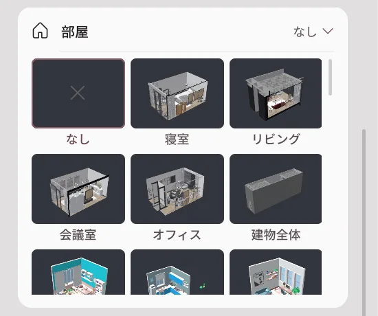
部屋プリセットを選んで背景空間を置きます。位置・回転・サイズでステージとアバターの位置を合わせます。BOOTHで購入した追加の部屋はDLC部屋パックを確認してください。
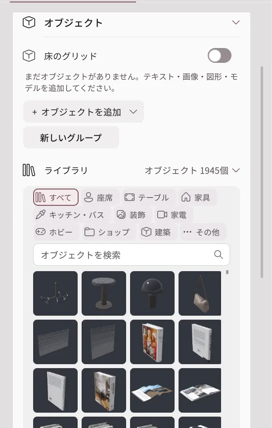
- オブジェクト追加: テキスト・画像・図形・3D小道具を置きます。
- ワールド固定: アバターが動いても物体はその場に残ります。
- アバター・ボーンに付ける: 体や手・頭に合わせて動きます。
- オフセット: 付けた位置から少し動かしたり回転させたりします。手に持つ物の位置を合わせるときに使います。
- アバター所属: 他のシーンに移してもそのアバターに従います。
- スタジオ所属: 現在のシーンに残ります。
小道具とアバターの利用権はそれぞれ原作者の利用規約に従います。詳しくは アバターと小道具 を確認してください。